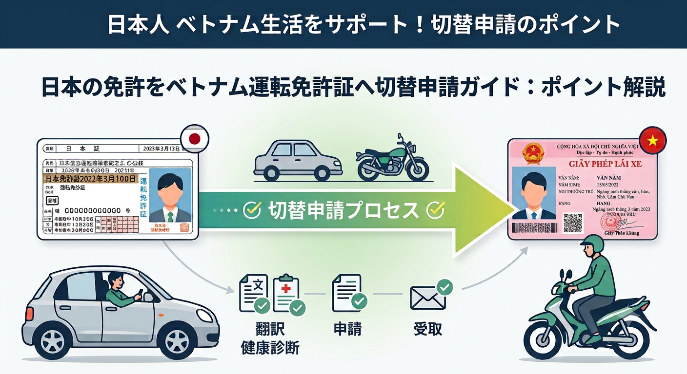

【TRC取得者限定】日本の免許をベトナム運転免許証へ切り替える全手順！自動車・バイク（二輪）の申請ガイド
公開日：2026年8月21日

TRC取得者向けのベトナム運転免許証切替ガイドこの記事のポイント
ベトナムでは日本の国際運転免許証（1949年ジュネーブ条約に基づくもの）が利用できません。現地で安全かつ合法的に運転するには、日本の免許証をベトナムの運転免許証へ切り替える必要があります。
1. 申請前に必ず知っておくべき重要ポイント
TRC（一時滞在カード：Temporary Residence Card）を取得されている方向けに、普通自動車および普通自動二輪車（バイク）の免許切替手続きを最新情報に基づいて解説します。
TRC（一時滞在カード）が必要
観光ビザではなく、有効なTRC（または長期滞在ビザ・永住カード）を所持していることが前提条件です（滞在期間が一定以上残っている必要があります）。
日本の免許区分がそのまま反映される
日本で「普通車のみ」をお持ちの場合、ベトナムでも車（B区分など）のみの切替となります。バイク（二輪）を運転したい場合は、日本で自動二輪免許を取得している必要があります。
※日本の普通車免許のみでベトナムのバイク免許を追加したい場合は、現地で実技試験を受験・合格する必要があります。
有効期限は「TRC」または「日本免許」のどちらか短い方
発給されるベトナム運転免許証の有効期限は、「TRCの有効期限」または「日本の免許証の有効期限」のうち、先に満了する日までとなります。
2. 申請に必要な書類リスト
提出書類は原則各1部ずつ準備します。
- 運転免許切替申請書（窓口または行政ポータルサイトにて入手）
- 日本の運転免許証（原本）＋ベトナム語翻訳公証文
- パスポート（原本＋コピー。入国スタンプのページも必要になる場合があります）
- TRC（一時滞在カード）の原本＋コピー
- 顔写真（カラー、3cm×4cm、背景：青色）
- 指定病院の健康診断書（原本）
ベトナムの公証役場（Notary Office）等で、日本語からベトナム語へ翻訳・公証したものを準備します。顔写真は申請書類貼付用で、免許証本体（PETカード）の写真は申請当日に窓口で直接デジタル撮影されたものが使用されます。健康診断はベトナム国内の指定総合病院で「運転免許申請用」を受診・発行します。
3. 申請窓口と手続きの流れ
最新の管轄変更ポイント
ベトナムの法律改正に伴い、運転免許証の管理・発行業務は従来の「交通運輸局（DOT）」から「公安省 交通警察局（Phòng Cảnh sát giao thông - Công an）」へ移管されました。
申請窓口は、居住地（各省・直轄市）の公安局交通警察部（Phòng Cảnh sát giao thông）の申請受託窓口です。ホーチミン市など一部の都市では、従来の交通運輸局と同じ建物・窓口に公安の受付ブースが配置されている場合もあります。
Step 1：日本の免許証の翻訳・公証
現地公証役場や代行業者を利用し、日本の運転免許証をベトナム語に翻訳して公証を受けます。
Step 2：指定病院で健康診断
運転免許申請に対応している指定病院で健康診断を受診します。
Step 3：公安局（交通警察）で申請・写真撮影
必要書類を提出し、手数料（135,000 VND等）を支払います。書類チェック後、専用カメラで顔写真を撮影します。
Step 4：免許証の受領
通常5営業日〜2週間ほどでPETカードが発行されます。控えを持って指定日に受け取るか、郵送サービスを利用します。
4. まとめ：自力で申請？それとも代行を使う？
TRCをお持ちであれば個人での申請も可能ですが、次のような場合は現地の日系・ローカル代行サービスの利用がおすすめです。
- 窓口（公安部門）でのベトナム語対応に不安がある
- 公証手配や平日の申請・受領時間を取るのが難しい
ベトナムの行政手続きは運用変更が多いため、代行業者に事前確認を取るのも確実な手段です。正しく手続きを済ませ、安全で快適なベトナム生活をスタートさせましょう。
免責事項本記事は執筆時点の情報に基づく一般的な案内です。法令、行政手続き、必要書類、申請窓口、手数料、所要期間は変更される場合があります。申請前に管轄機関または専門家へ最新情報をご確認ください。
【限TRC持有人】日本駕照轉換為越南駕駛執照的完整流程！汽車・機車申請指南
發佈日期：2026年8月21日
本文章的重點
在越南不能使用依據1949年日內瓦公約的日本國際駕駛執照。若要在當地安全且合法地駕駛，必須將日本駕照轉換為越南駕駛執照。
1. 申請前必須知道的重點
本文針對持有TRC（臨時居住卡：Temporary Residence Card）的人士，依最新資訊說明普通小客車及普通機車的駕照轉換手續。
需要TRC（臨時居住卡）
前提是持有有效的TRC（或長期居留簽證、永久居留卡），而不是觀光簽證；居留期限也需要剩餘一定期間。
日本駕照種類會直接反映
若在日本只有普通汽車駕照，在越南通常只能轉換汽車（例如B類）駕照。若想駕駛機車，必須在日本持有普通機車駕照。
※若只有日本普通汽車駕照，想另外取得越南機車駕照，則需要在當地參加並通過實技考試。
有效期限以TRC或日本駕照較早到期者為準
核發的越南駕駛執照有效期限，通常到TRC有效期限或日本駕照有效期限中較早到期的日期為止。
2. 申請所需文件
原則上各準備一份提交文件。
- 駕駛執照轉換申請書（向窗口或行政入口網站取得）
- 日本駕照正本及越南文翻譯公證文件
- 護照正本及影本（可能需要入境章頁面影本）
- TRC（臨時居住卡）正本及影本
- 彩色證件照（3cm×4cm、藍色背景）
- 指定醫院開立的健康檢查證明正本
請在越南公證處（Notary Office）等機構辦理日文至越南文的翻譯及公證。證件照用於貼在申請文件上；駕照PET卡上的照片，則是在申請當日由窗口直接以數位方式拍攝。健康檢查須在越南國內可辦理駕照申請用檢查的指定綜合醫院完成。
3. 申請窗口與手續流程
最新管轄變更重點
因越南法律修訂，駕駛執照管理及核發業務已由原交通運輸局（DOT）移交至公安部交通警察局（Phòng Cảnh sát giao thông - Công an）。
申請窗口為居住地各省或直轄市公安局交通警察部的受理窗口。胡志明市等部分城市，公安受理櫃台也可能設在原交通運輸局的同一棟建築或窗口。
Step 1：日本駕照翻譯及公證
利用當地公證處或代辦業者，將日本駕照翻譯成越南文並辦理公證。
Step 2：在指定醫院接受健康檢查
前往可辦理駕照申請用檢查的指定醫院。
Step 3：向公安局交通警察窗口申請及拍照
提交文件並支付手續費（例如135,000 VND等），完成文件確認後以專用相機拍攝駕照照片。
Step 4：領取駕照
受理後通常約5個工作日至2週核發PET卡，可於指定日期到窗口領取或使用郵寄服務。
4. 總結：自行申請還是委託代辦？
持有TRC即可自行申請，但有以下情況時，建議利用當地日系或在地代辦服務：
- 不熟悉在公安部門窗口以越南文辦理
- 難以安排公證及平日申請、領取的時間
越南行政手續的作業方式經常變更，事前向代辦業者確認也是較穩妥的方式。正確完成手續，開始安全舒適的越南生活。
免責事項免責事項を読み込んでいます。